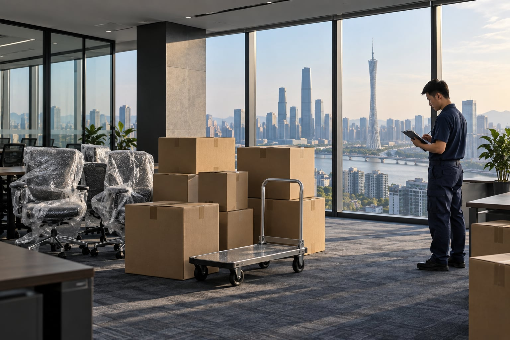

办公室搬迁
把新的工作日，安排得更从容。
查看咨询要点 ↗
说明搬出搬入位置、物品数量和计划日期。
核对车辆、人员、费用组成与额外作业。
明确搬运时段、现场条件和双方约定。
对照清单检查物品数量、外观与摆放。
费用通常与车辆及车次、人工、两端楼层与电梯、搬运距离、拆装打包及特殊物品有关。请提供两端地址和物品清单，并在确认服务前核对书面报价的包含项与另计项。
建立按部门、工位编号的物品清单，将设备、配件与线缆对应标记。与物业确认搬运时间、货梯和车辆通行条件；涉及业务数据的设备应提前备份并安排专人交接。
咨询时如实说明楼层、楼梯宽度、物品尺寸和步行搬运距离。这些条件可能影响人员安排、可搬物品和费用，是否能够承接需逐项确认。
说明时间、地点和物品，让沟通更具体。